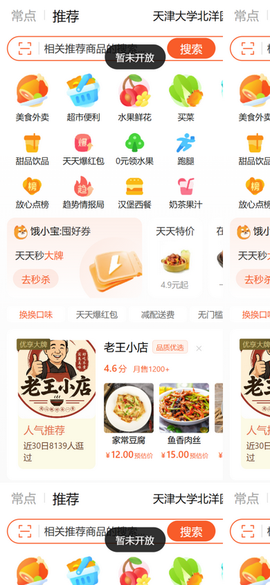

回答「本地和服务器为什么不一样」：服务器跑的是 9/14 发布的 20260914-a2f15b1，今天合并进 main 的变更（前端新页面与交互、后端四组接口、平台分类与规格/会员价种子）都还没重新发布。下面两张图是线上旧构建实拍：① 线上首页；② 线上宫格点「美食外卖」仍提示「暂未开放」（9/15 的宫格接线未上线）。线上构建产物也缺失 SettingsView / FaqView / ProfileView 三个 9/15 新增页面的分包（已抓线上入口 JS 核对）。

| 核对项 | 线上（4001） | 本地 main（frontend/user-h5/src） |
|---|---|---|
| 设置页 SettingsView / FAQ 页 FaqView / 个人资料页 ProfileView | 无对应分包（旧构建） | 已存在（9/15 合并） |
| 订单列表六项状态筛选 | 仅「全部」 | 已实现（TODO-USER-118） |
| 商品规格弹层与会员价高亮 | 无弹层、无会员价行 | 已实现（TODO-USER-119） |
| 搜索结果商品组与分页 | 仅商家组 | 已实现（TODO-USER-120） |
| 首页宫格课程分类入口 | 点击提示「暂未开放」 | 已接线（TODO-USER-121） |
| 订单详情商品行缩略图 | 空占位（无图） | 已修（TODO-USER-124，BUG-20260915-003） |
| 后端 /me/favorites、/me/member、/me/notifications、/search | 404（旧 jar） | main 已实现、待发布（批次④⑤⑥） |